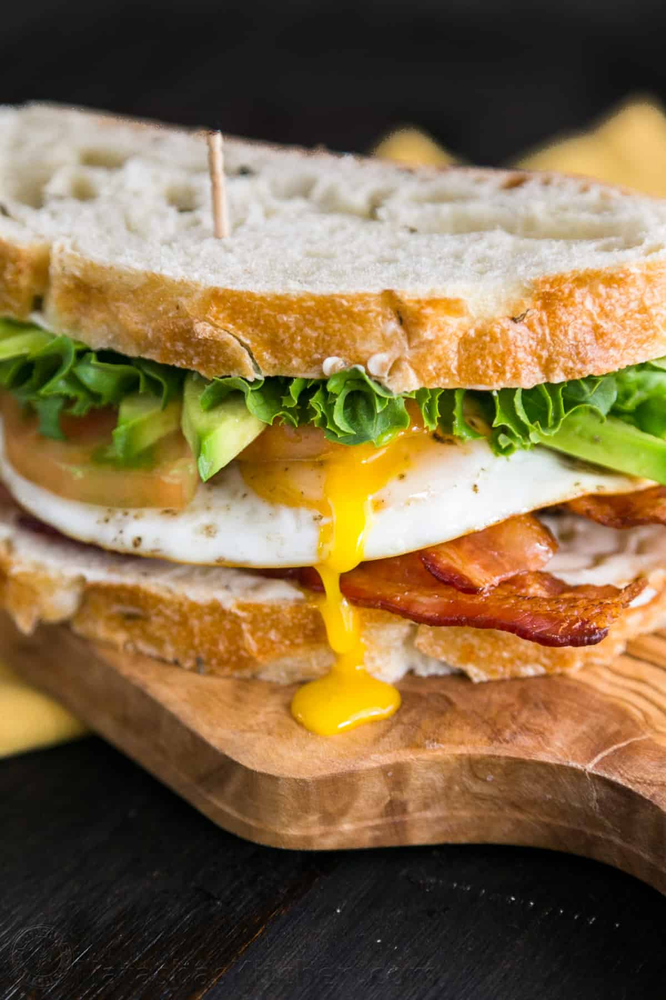

Breakfast Sandwich

Breakfast BLT Sandwich
This sandwich is not just the perfect hangover cure but a perfect way to start ANY morning!
Ingredients
- 2 Slices of Rye bread
- 3 oz. of bacon
- 1 egg
- 1 avacado
- 1 Roma tomato
- 2 green lettuce leaves
- Chipotle mayo
- Salt and pepper
- Olive oil
Cooking Instructions
- Put foil over a rimmed cookie sheet, place wire rack over cookie sheet, place bacon onto wire rack.
- Bake the bacon at 400° for 20 minutes.
- Cook eggs over medium heat in 1/2 Tbsp of olive oil. Do not flip. Place lid over pan for the last 30 seconds to fully cook egg whites.
- Add some butter to skillet and place bread. Toast until golden brown.
- Spread chipotle mayo on one side of each bread slice.
- Add the bacon and egg onto one slice of bread, lettuce, tomato, and sliced avacado to the other slice. Combine together in perfect harmony.